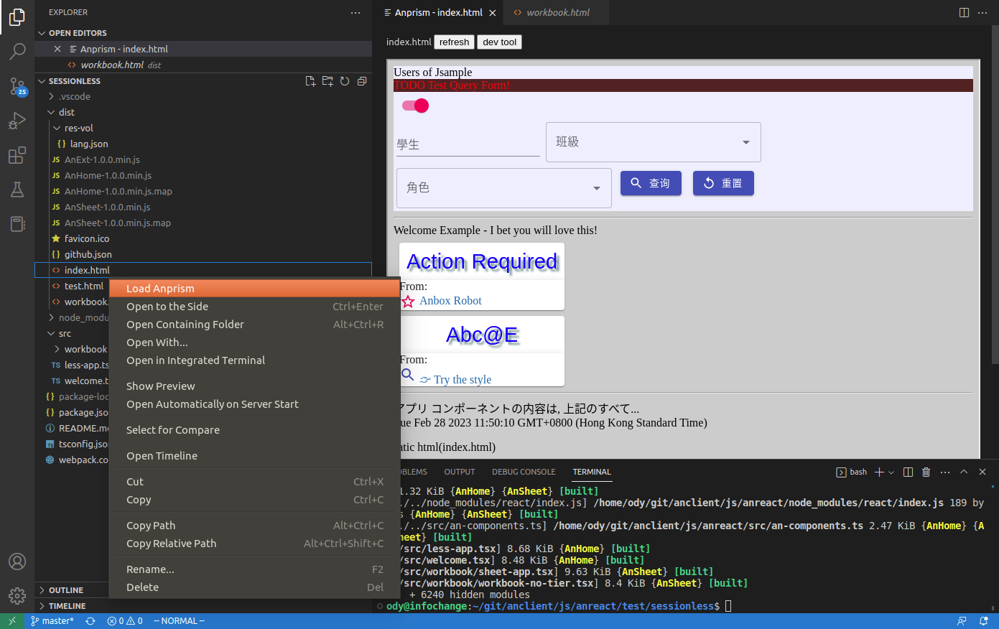

About Anclient.ts¶
Anclient is the client side API for semantic-jserv service like jserv-sample. The typescript client version includes:
@anclient/semantier &
@anclient/anreact,
Since 0.9.42, @anclient/semantier is a semantics supported protocol layer, and Semantier is short for Semantics Tier, a low level ts client API for accessing service provided by semantic-jserver.
The @anclient/anreact is a presentation tier package for accessing semantier API, built on Material UI + ReactJS.
Anclient.ts Quick Start¶
There are 2 built-in typescript packages for testing that come with the installed npm packages, which can be useful for kick start.
Start with session-managed client¶
This sample project consists of two parts, one from the test project of semantic-jserv, one from the test of @anclient/anreact.
Deploy a data service using Semantic-jserv
Say, tsample.
Install Anclient.ts.
Anclient.js is actually implemented in Typescript.
It’s two npm packages:
npm install react react-dom
npm install @anclient/semantier @anclient/anreact
Create a Typescript client
See Anclient/js/areact/test/tsample/dist/index.html for a reactJS client, which can accessing data service, an implementation based on semantic-jserv.
Start with the session-less client¶
Use the released package¶
This way uses jserv-sandbox (src) as an example for quick start, which won’t verify HTTP requests session token at server side.
Prerequisite
Downalod 2 zip at Anclient release section.
Deploy a web application of jserv-sandbox
Extract the java web project, jserv-sandbox.zip, then open it as an existing maven project,
Eclipse -> File -> Open Projects from File System
then install maven package, and deploy to a Tomcat server.
To run the server, set VOLUME_HOME environment variable to the volume folder path, like:
-DVOLUME_HOME="C:\\Users\\Ody\\jserv-sandbox\\volume"


And don’t forget to allow CROS if planning to deploy the servicer side at a different domain to the web page server, where the html pages are loaded from.
In web application’s configuration, e.g. tomcat server’s web.xml, add
<filter>
<filter-name>CorsFilter</filter-name>
<filter-class>org.apache.catalina.filters.CorsFilter</filter-class>
</filter>
<filter-mapping>
<filter-name>CorsFilter</filter-name>
<url-pattern>/*</url-pattern>
</filter-mapping>
Install Anclient.ts/sessionless.
Extract anclient.sessionless.zip to local folder, e.g. anclient.sessionless.
cd anclient.sessionless
npm install
cd test/sessionless && npm install
webpack
cd dist && python3 -m http.server 8888
Now let’s edit sessionless/dist/github.json to point jserv to the sandbox root path. Then load the page at:
http://localhost:8888
The App with a HTML page’s source can be found at Anclient/js/anreact/test/sessionless/dist/index.html.
<div id="app"></div>
<noscript>You need to enable JavaScript to run this app.</noscript>
<script src="AnHome-1.0.0.min.js"></script>
<script>
// let searchParams = new URLSearchParams(window.location.search)
// let serv = searchParams ? searchParams.get('serv') : undefined;
less.App.bindHtml('app', {
jsonUrl: 'http://localhost:8889/github.json',
serv: 'sandbox', Window, portal: 'index.html'});
</script>
where the function bindHtml(div, {jsonUrl, serv}) is implemented in less-app.tsx.
The jsonUrl is a configure variable that can tell bindHtml() where to find json data service, the jserv-sandbox.
The final result load with Anprism should like this:
{kind=link}

Use the docker image¶
The method uses a published docker layer for data service, and can be even simpler than the way of starting from Eclipse project. Users only care about JS pages can benefited from this docker layer.
Setup docker
Download docker-start & volume.zip at the release section.
Extract the zip file, then run docker-start in the same folder.
Now the docker container should report like this:
docker ps
CONTAINER ID IMAGE COMMAND CREATED STATUS PORTS NAMES
4a1a0b3a7bf6 odysz/jserv-sandbox "catalina.sh run" 20 minutes ago Up 20 minutes 0.0.0.0:8080->8080/tcp, :::8080->8080/tcp jsandbox
Setup client project
Please follow the same step in the way of using jserv-sandbox package.